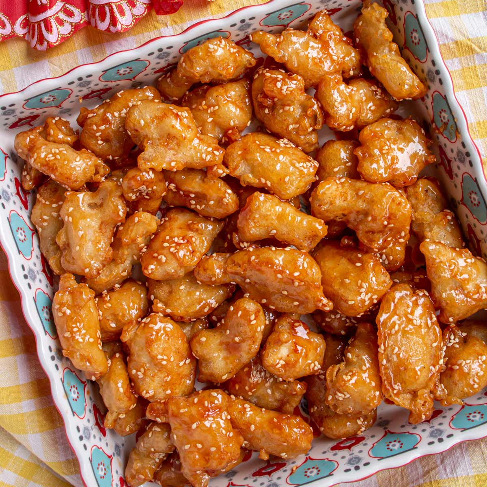

Lasagna

Description:
this is sesame chicken. It is good. Practically the greatest food ever.
You make it very carefully. Yum. Yum......Yum
Ingredients
Chicken
- 1 1/2 lbs boneless skinless chicken breasts cut into 1 inch pieces
- 2 eggs beaten
- salt and pepper to taste
- 1/2 cup all purpose flour
- 1/2 cup cornstarch
- Avacado or Peanut oil for frying
Sauce
- 1 teaspoon vegetable oil
- 1 teaspoon minced fresh garlic
- 1/4 cup honey
- 1/3 cup soy sauce (reduced sodium if possible)
- 1/3 cup ketchup
- 3 tablespoons brown sugar
- 2 tablespoons rice vinegar
- 1 tablespoon toasted sesame oil
- 2 teaspoons cornstarch
- 2 tablespoons sesame seeds
- 2 tablespoons sliced green onions
Steps
- Place the eggs, salt and pepper in a bowl. Stir to combine
- Place the flour and 1/2 cup of cornstarch in a shallow bowl or on a plate.
Stir to combine.
- Dip each piece of chicken into the egg mixture, then into the flour.
Repeat the process with all of the chicken.
- Heat 3 inches of oil in a deep pan to 350 degrees F
- Add 7-8 pieces of chicken to the pan. Cook for 5 minutes or until crispy
and golden brown. Repeat the process with the remaining chicken
- Drain the chicken on paper towels
- While the chicken is cooking, combine the honey, soy sauce, ketchup, brown sugar,
rice vinegar, sesame oil and 2 teaspoons of cornstarch in a bowl.
- Heat the teaspoon of oil in a large pan over medium heat. Add the garlic and cook
for 30 seconds. Add the honey sauce mixture and bring to a simmer. Cook for 3-4
minutes or until just thickened.
- Add the crispy chicken to the pan and toss to coat with the sauce. Sprinkle with sesame
seeds and green onions, then serve.